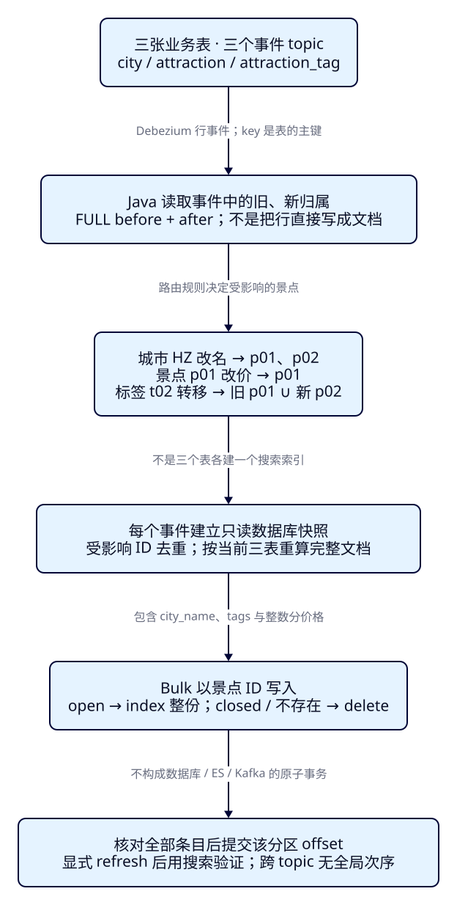
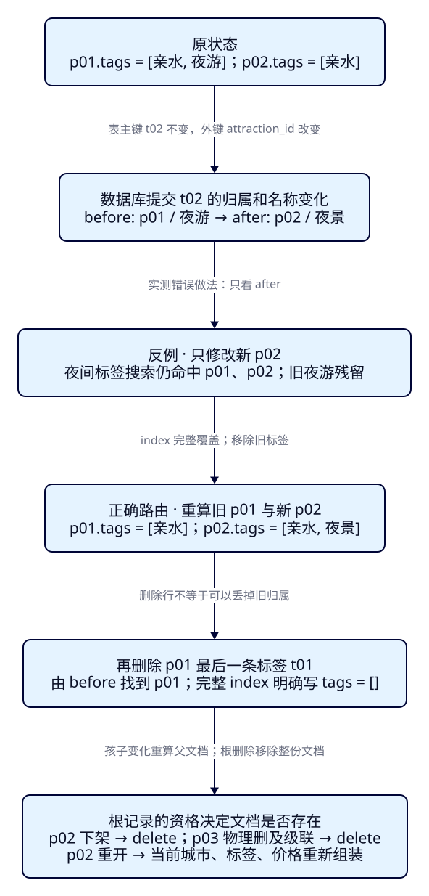

一个标签改了，
怎样更新正确的搜索文档？
旅游运营把“夜游”标签从游船移到步道，并改名“夜景”。如果搜索只给步道加标签，游船仍会出现在夜间筛选中。F37/F38已经把一行变化送到ES，本课进一步回答：变化的这行属于谁，原来属于谁，一次修改究竟应重算哪些搜索文档。
学完能用输出证明什么
- 把城市、景点和标签事件分别路由到正确的景点ID；用真实before/after说明标签转移为何同时影响旧、新归属。
- 在同一只读数据库快照内组装完整文档，以Bulk核对城市名、整数分价格、标签数组；用实际搜索证明旧标签被移除。
- 区分子记录删除、景点下架、根记录物理删除与重新开放，验证空数组、ES删除和重新组装，并说明当前方案的适用条件。
本课目录
图解跳转：01 · 哪些景点受影响 · 02 · 转移与残留移除
1. 数据库改的是一行，游客检索的是一份文档
Elasticsearch保存适合检索的派生文档，业务数据库维护表之间的关系和事务。一份景点文档除了名称、价格，还包含城市显示名和标签数组。把城市、景点、标签分别搬进三个索引，并不能让既有搜索请求自动完成三表关联。我们把按搜索需求组装文档的过程称为投影，把“这次行变化需要重算谁”称为事件路由。
F36已经用SQL展示过多表投影，但关联变化还靠人工给出ID。F37/F38的单表消费者直接把after写成文档，也不知道城市改名应广播给哪些景点。本课把捕获变化和多表组装接起来：事件提供变化线索，Java找受影响的景点，再读业务库当前状态重算。ES负责检索这些结果，不维护数据库外键。
本机观察窗继续搜索“西湖”、HZ、200元以内、中心3km。它能观察p01涨价、p02下架与重开；城市名、标签和苏州的p03用ES完整_source及标签查询核对。观察窗没有新增标签筛选控件，不能把CLI里的变化说成已有界面功能。浏览器仍经Java搜索服务访问ES，Pages只提供教程。
2. 先分清表主键、归属键与文档ID
| 表与初始行 | 主键及关系 | 变更影响谁 |
|---|---|---|
| city：HZ/杭州，SZ/苏州 | 主键city_code | 查询当前属于该城市的景点ID；HZ影响p01、p02，SZ影响p03 |
| attraction：p01游船6000，p02步道0，p03园林3000 | 主键attraction_id，city_code外键 | 该景点本身；金额单位分，三行初始open |
| attraction_tag：t01/p01/亲水，t02/p01/夜游，t03/p02/亲水 | 主键tag_id，attraction_id为可变外键 | 新增看新归属；删除看旧归属；更新取旧、新归属的并集 |
ES的_id固定使用景点ID，不使用t02。t02转移后表主键没变，文档归属却从p01变成p02；这与“更换表主键”是不同的问题。本课不支持表主键变更或TRUNCATE。标签是直接隶属景点的子记录，不含独立共享标签词典；酒店房型变更也可以按父酒店ID路由，但本课真实样本只有景点，不声称验证过酒店同步。

3. 给旧归属留证据，再启动独立链路
PG默认REPLICA IDENTITY通常只为旧行提供主键信息。标签的主键是tag_id，attraction_id却不是主键；标签已经转走或删除后，单靠当前表无法查回旧景点。本课三张表显式设FULL，让更新/删除事件携带旧行。FULL只改变旧行信息的前提，不会替Java找归属、修正历史上已丢失的信息，也不提供跨表事件排序。依据见Debezium 3.3的replica identity说明。
独立Compose项目es-framework-f39：PG17.5、Kafka broker4.0.1、Debezium Connect3.3.1.Final、ES9.4.0/Lucene10.4.0。前三镜像沿用已核验digest；Connect内含4.1.0，Java Kafka客户端为4.0.1。应用复用Boot4.0.8、JDK25.0.4.1+1、官方Java与Rest5 Client9.4.8，新增独立pgJDBC42.7.8；ES内置JVM26.0.1另列。固定教学制品不代表最新版本推荐。
回环端口为PG15439、Kafka29339、Connect18339、ES20339、观察窗18089。init在被忽略的infra/f39/.local创建管理员、CDC与只读投影账户的随机秘密，目录0700/文件0600；已有.local或本课卷时拒绝覆盖。CDC复制读取、Java JDBC回查分别用账户f39_cdc与f39_projector，两者无业务写权限。本地合成环境关闭ES认证，Kafka/Connect明文，JDBC关闭TLS；部署安全沿用F35另行配置。
cd projects/travel-search
python3 labs/f39/lab.py init --out /tmp/f39-init
python3 labs/f39/lab.py start --out /tmp/f39-setup
cd backend
./mvnw -B -ntp clean package dependency:build-classpath -Dmdep.outputFile=target/f39-classpath.txt
cd ..
backend/mvnw -B -ntp -f labs/f39/pom.xml dependency:build-classpath -Dmdep.outputFile=target/projection-classpath.txt展开完整三表、固定样本、FULL与授权
prepare私下把两个口令通过psql标准输入绑定到变量。以下SQL模板中的变量不含真实秘密，不要原样绕过准备步骤执行。
-- Secrets are bound by lab.py through psql stdin, never committed or logged.
CREATE SCHEMA f39;
CREATE TABLE f39.city (
city_code text PRIMARY KEY,
city_name text NOT NULL
);
CREATE TABLE f39.attraction (
attraction_id text PRIMARY KEY CHECK (attraction_id ~ '^p[0-9]{2}$'),
name text NOT NULL,
city_code text NOT NULL REFERENCES f39.city(city_code),
ticket_price_fen bigint NOT NULL CHECK (ticket_price_fen >= 0),
status text NOT NULL CHECK (status IN ('open', 'closed')),
latitude double precision NOT NULL,
longitude double precision NOT NULL
);
CREATE INDEX ON f39.attraction(city_code);
CREATE TABLE f39.attraction_tag (
tag_id text PRIMARY KEY CHECK (tag_id ~ '^t[0-9]{2}$'),
attraction_id text NOT NULL REFERENCES f39.attraction(attraction_id) ON DELETE CASCADE,
tag text NOT NULL,
UNIQUE (attraction_id, tag)
);
CREATE INDEX ON f39.attraction_tag(attraction_id);
INSERT INTO f39.city VALUES ('HZ','杭州'), ('SZ','苏州');
INSERT INTO f39.attraction VALUES
('p01','西湖 游船','HZ',6000,'open',30.250,120.150),
('p02','西湖 步道','HZ',0,'open',30.251,120.151),
('p03','西湖 园林','SZ',3000,'open',31.320,120.620);
INSERT INTO f39.attraction_tag VALUES
('t01','p01','亲水'), ('t02','p01','夜游'), ('t03','p02','亲水');
-- FULL is essential for the non-key old attraction_id of a moved/deleted tag.
ALTER TABLE f39.city REPLICA IDENTITY FULL;
ALTER TABLE f39.attraction REPLICA IDENTITY FULL;
ALTER TABLE f39.attraction_tag REPLICA IDENTITY FULL;
CREATE ROLE f39_cdc LOGIN REPLICATION PASSWORD :'cdc_password';
CREATE ROLE f39_projector LOGIN PASSWORD :'projector_password';
GRANT CONNECT ON DATABASE travel_f39 TO f39_cdc, f39_projector;
GRANT USAGE ON SCHEMA f39 TO f39_cdc, f39_projector;
GRANT SELECT ON ALL TABLES IN SCHEMA f39 TO f39_cdc, f39_projector;
CREATE PUBLICATION f39_publication FOR TABLE f39.city, f39.attraction, f39.attraction_tag;展开Compose与Debezium配置：三个表、三个业务topic
name: es-framework-f39
services:
postgres:
image: postgres:17.5-bookworm@sha256:fbcea1bd13b6a882cd6caa6b58db3ae5c102efe50ec625b3e2a5cbc50db5bfe4
command: [postgres, -c, wal_level=logical, -c, max_replication_slots=4, -c, max_wal_senders=4, -c, max_slot_wal_keep_size=128MB]
environment:
POSTGRES_USER: travel
POSTGRES_DB: travel_f39
POSTGRES_PASSWORD_FILE: /run/secrets/pg-password
secrets: [pg-password]
volumes:
- pg-data:/var/lib/postgresql/data
- ../../data/f39:/lesson:ro
ports: ["127.0.0.1:15439:5432"]
mem_limit: 256m
healthcheck:
test: [CMD-SHELL, "pg_isready -U travel -d travel_f39"]
interval: 3s
timeout: 3s
retries: 40
kafka:
image: apache/kafka:4.0.1@sha256:9a129e03121d46d74349a480f8f17082df3dd411b28281c9eabb95cf096370b9
environment:
CLUSTER_ID: ZjM5bGFiLXNpbmdsZS1ub2Rl
KAFKA_NODE_ID: 1
KAFKA_PROCESS_ROLES: broker,controller
KAFKA_CONTROLLER_QUORUM_VOTERS: 1@kafka:9093
KAFKA_LISTENERS: INTERNAL://:9092,CONTROLLER://:9093,EXTERNAL://:9094
KAFKA_ADVERTISED_LISTENERS: INTERNAL://kafka:9092,EXTERNAL://127.0.0.1:29339
KAFKA_LISTENER_SECURITY_PROTOCOL_MAP: INTERNAL:PLAINTEXT,CONTROLLER:PLAINTEXT,EXTERNAL:PLAINTEXT
KAFKA_CONTROLLER_LISTENER_NAMES: CONTROLLER
KAFKA_INTER_BROKER_LISTENER_NAME: INTERNAL
KAFKA_OFFSETS_TOPIC_REPLICATION_FACTOR: 1
KAFKA_OFFSETS_TOPIC_NUM_PARTITIONS: 1
KAFKA_TRANSACTION_STATE_LOG_REPLICATION_FACTOR: 1
KAFKA_TRANSACTION_STATE_LOG_MIN_ISR: 1
KAFKA_GROUP_INITIAL_REBALANCE_DELAY_MS: 0
KAFKA_NUM_PARTITIONS: 1
KAFKA_AUTO_CREATE_TOPICS_ENABLE: "false"
KAFKA_LOG_DIRS: /var/lib/kafka/data
KAFKA_HEAP_OPTS: -Xms256m -Xmx256m
KAFKA_LOG_CLEANER_DEDUPE_BUFFER_SIZE: 16777216
ports: ["127.0.0.1:29339:9094"]
volumes: [kafka-data:/var/lib/kafka/data]
mem_limit: 512m
connect:
image: quay.io/debezium/connect:3.3.1.Final@sha256:18ad5f606365b69133fec658d63b37483a54af171b4c9561e00e87c0303ea443
environment:
BOOTSTRAP_SERVERS: kafka:9092
GROUP_ID: f39-connect
CONFIG_STORAGE_TOPIC: f39-connect-configs
OFFSET_STORAGE_TOPIC: f39-connect-offsets
STATUS_STORAGE_TOPIC: f39-connect-status
CONNECT_CONFIG_STORAGE_REPLICATION_FACTOR: 1
CONNECT_OFFSET_STORAGE_REPLICATION_FACTOR: 1
CONNECT_STATUS_STORAGE_REPLICATION_FACTOR: 1
CONNECT_OFFSET_STORAGE_PARTITIONS: 1
CONNECT_STATUS_STORAGE_PARTITIONS: 1
OFFSET_FLUSH_INTERVAL_MS: 1000
CONNECT_CONFIG_PROVIDERS: file
CONNECT_CONFIG_PROVIDERS_FILE_CLASS: org.apache.kafka.common.config.provider.FileConfigProvider
HEAP_OPTS: -Xms256m -Xmx256m
ports: ["127.0.0.1:18339:8083"]
secrets: [cdc-properties]
depends_on:
postgres: {condition: service_healthy}
kafka: {condition: service_started}
mem_limit: 640m
es:
image: docker.elastic.co/elasticsearch/elasticsearch:9.4.0
environment:
cluster.name: travel-f39-lab
node.name: travel-f39-es
discovery.type: single-node
xpack.security.enabled: "false"
xpack.ml.enabled: "false"
ES_JAVA_OPTS: -Xms256m -Xmx256m
ports: ["127.0.0.1:20339:9200"]
volumes: [es-data:/usr/share/elasticsearch/data]
mem_limit: 768m
ulimits:
nofile: {soft: 65535, hard: 65535}
volumes:
pg-data:
kafka-data:
es-data:
secrets:
pg-password: {file: .local/pg-password.txt}
cdc-properties: {file: .local/cdc.properties}{
"name": "f39-pg",
"config": {
"connector.class": "io.debezium.connector.postgresql.PostgresConnector",
"tasks.max": "1",
"database.hostname": "postgres",
"database.port": "5432",
"database.user": "f39_cdc",
"database.password": "${file:/run/secrets/cdc-properties:password}",
"database.dbname": "travel_f39",
"topic.prefix": "travel_f39",
"plugin.name": "pgoutput",
"slot.name": "f39_slot",
"slot.drop.on.stop": "false",
"publication.name": "f39_publication",
"publication.autocreate.mode": "disabled",
"table.include.list": "f39.city,f39.attraction,f39.attraction_tag",
"snapshot.mode": "initial",
"tombstones.on.delete": "true",
"key.converter": "org.apache.kafka.connect.json.JsonConverter",
"key.converter.schemas.enable": "false",
"value.converter": "org.apache.kafka.connect.json.JsonConverter",
"value.converter.schemas.enable": "false",
"poll.interval.ms": "200",
"status.update.interval.ms": "1000"
}
}4. f39-c01：八行快照，生成三份景点文档
从无本课表、业务topic、消费组和索引的状态执行prepare；与后面的自动run二选一。它创建表、读取权限、publication、三条单分区topic、索引与读写alias，注册连接器并等到8个r入Kafka。两张城市行、三张景点行、三张标签行一共8个事件，最终却只有3份搜索文档。不要期待三个topic按某个全局顺序交付。
python3 labs/f39/lab.py prepare --out /tmp/f39-manual
bash labs/f39/java.sh inspect
bash labs/f39/requests.sh inspect
bash labs/f39/java.sh drain
curl --fail-with-body -sS http://127.0.0.1:20339/tut-f39-attractions-read/_doc/p01
bash labs/f39/requests.sh inspect
bash labs/f39/requests.sh refresh
bash labs/f39/requests.sh inspectinspect只读事件，不提交应用组。drain加入唯一应用组，从各分区上次提交位置处理到本次观察边界；本课手工分段操作，每段提交SQL后等待事件到齐，消费期间暂停其他写入。索引显式1主0副、dynamic=strict、refresh_interval=-1。消费后GET p01已有完整_source，SEARCH仍为空；显式_refresh后，p01含杭州和[亲水,夜游]，p02含杭州和[亲水]，p03含苏州和空标签数组。
展开完整mapping与固定搜索契约
{
"settings": {
"number_of_shards": 1,
"number_of_replicas": 0,
"refresh_interval": "-1"
},
"mappings": {
"dynamic": "strict",
"properties": {
"attraction_id": {
"type": "keyword"
},
"name": {
"type": "text",
"analyzer": "whitespace"
},
"city_code": {
"type": "keyword"
},
"city_name": {
"type": "keyword"
},
"ticket_price_fen": {
"type": "long",
"coerce": false
},
"currency": {
"type": "keyword"
},
"status": {
"type": "keyword"
},
"location": {
"type": "geo_point"
},
"tags": {
"type": "keyword"
}
}
}
}{
"actions": [
{
"add": {
"index": "tut-f39-attractions-v001",
"alias": "tut-f39-attractions-read"
}
},
{
"add": {
"index": "tut-f39-attractions-v001",
"alias": "tut-f39-attractions-write",
"is_write_index": true
}
}
]
}{
"size": 20,
"track_total_hits": true,
"query": {
"match_all": {}
},
"sort": [
{
"attraction_id": "asc"
}
]
}本机观察窗只显示HZ的p01/60元、p02/0元；p03因城市与距离条件未入选，不是文档丢失。使用以下命令在另一个JDK25终端启动观察窗，打开本机18089。每次显式refresh后点击搜索，实际esRequest可以重放核对；新增城市名、标签以完整_source验证。
ES_URL=http://127.0.0.1:20339 ES_INDEX=tut-f39-attractions-read ES_CA_FILE= ES_API_KEY_FILE= APP_PORT=18089 java -Xms64m -Xmx192m -jar backend/target/travel-search-0.7.0.jar5. Java先找受影响ID，不能把tag_id当文档ID
三个业务topic都保留原始JSON信封。Java先验证来源db/schema/table、支持的操作和稳定主键：r/c用after，u同时读before/after，d用before，null tombstone不再产生ES操作。景点行直接给景点ID；标签行给旧、新attraction_id；城市行查当前该城市的景点。TreeSet把同一事件内重复ID去掉，不把不同topic的offset当作可比较的全局版本。
关键是u/d标签必须有旧attraction_id。代码遇到缺字段会报错退出，不能悄悄只取after并提交位置。城市查回用到了city_code索引，标签组装用到了attraction_id索引；当前只有三个景点，尚未验证大规模广播的分批与背压。
static String field(JsonNode node, String name) {
String value = node.path(name).asString("");
if (value.isBlank()) throw new IllegalArgumentException("Missing " + name + "; require FULL old row");
return value;
}
static void id(Set<String> ids, JsonNode row) {
String value = field(row, "attraction_id");
if (!value.matches("p[0-9]{2}")) throw new IllegalArgumentException("Invalid attraction_id");
ids.add(value);
}
static Set<String> affected(Connection db, ConsumerRecord<String, String> record) throws Exception {
var ids = new TreeSet<String>();
String table = record.topic().substring(PREFIX.length());
if (!TABLES.contains(table)) throw new IllegalArgumentException("Unexpected topic");
JsonNode key = JSON.readTree(record.key());
String keyField = switch (table) {
case "city" -> "city_code";
case "attraction" -> "attraction_id";
default -> "tag_id";
};
String rowKey = field(key, keyField);
if (record.value() == null) return ids; // The d event routed deletion; null is a compaction marker.
JsonNode event = JSON.readTree(record.value()), source = event.path("source");
if (!"travel_f39".equals(source.path("db").asString())
|| !"f39".equals(source.path("schema").asString())
|| !table.equals(source.path("table").asString())) {
throw new IllegalArgumentException("Unexpected source");
}
String op = field(event, "op");
if (!List.of("r", "c", "u", "d").contains(op)) throw new IllegalArgumentException("Unsupported op");
JsonNode before = event.path("before"), after = event.path("after");
var rows = new ArrayList<JsonNode>();
if (List.of("u", "d").contains(op)) rows.add(before);
if (!"d".equals(op)) rows.add(after);
for (JsonNode row : rows) {
if (!rowKey.equals(field(row, keyField))) throw new IllegalArgumentException("Row key changed/mismatch");
if (table.equals("city")) {
try (var query = db.prepareStatement("SELECT attraction_id FROM f39.attraction WHERE city_code=? ORDER BY attraction_id")) {
query.setString(1, field(row, "city_code"));
try (var rs = query.executeQuery()) { while (rs.next()) ids.add(rs.getString(1)); }
}
} else {
// A moved tag must invalidate both before.attraction_id and after.attraction_id.
id(ids, row);
}
}
return ids;
}6. 回查当前三表，完整覆盖而不是拼补丁
事件在这里表示“这份景点文档需要重算”，不是一份可直接写入的搜索文档。Java回查PG主库，把景点、城市和全部当前标签重新组装；标签按C排序，缺标签显式COALESCE为[]。SQL先判断open；根记录不存在或closed都产生delete。删除标签以后，重新组装会自然去掉旧元素，不需要猜ES现在存着什么。
每处理一条事件，JDBC使用只读REPEATABLE READ事务，路由里的关联查找和所有文档读取共用该事务快照，组装完提交只读事务。这个快照是回查时建立的当前视图，可能比触发事件更新；它不是原事件提交时的历史状态，也不是所有topic共同的事务快照。PG快照规则见PG17事务隔离说明，凭据由pgJDBC Properties连接方式读取，密码不进入URL。
static final String PROJECTION = """
SELECT jsonb_build_object(
'attraction_id',a.attraction_id,'name',a.name,
'city_code',a.city_code,'city_name',c.city_name,
'ticket_price_fen',a.ticket_price_fen,'currency','CNY','status',a.status,
'location',jsonb_build_object('lat',a.latitude,'lon',a.longitude),
'tags',COALESCE((SELECT jsonb_agg(t.tag ORDER BY t.tag COLLATE "C")
FROM f39.attraction_tag t WHERE t.attraction_id=a.attraction_id),'[]'::jsonb))
FROM f39.attraction a JOIN f39.city c USING(city_code)
WHERE a.attraction_id=? AND a.status='open'
""";展开只读JDBC连接与文件配置读取
static Connection database() throws Exception {
var p = new Properties();
try (var input = Files.newInputStream(Path.of("infra/f39/.local/projector.properties"))) {
p.load(input);
}
String url = (String) p.remove("url");
var db = DriverManager.getConnection(url, p); // Password is a property, never in URL or logs.
db.setReadOnly(true);
db.setTransactionIsolation(Connection.TRANSACTION_REPEATABLE_READ);
db.setAutoCommit(false);
return db;
}以下实现对每个受影响ID生成一条Bulk index或delete，写入目标限定为write alias。index创建或完整替换文档；update doc则合并指定字段，漏掉的旧字段不会自行消失。Bulk中同时出现两条index也不意味着它们一起原子生效。必须逐条检查结果，已有文档删除成功和删除已不存在的文档均可接受；其他条目错误抛出，当前事件不提交。API语义见Bulk参考与官方Java Bulk示例。
static Map<String, Object> apply(Connection db, ElasticsearchClient es,
ConsumerRecord<String, String> record) throws Exception {
var ids = affected(db, record);
var operations = new ArrayList<Map<String, Object>>();
var ndjson = new StringBuilder();
var bulk = new BulkRequest.Builder().requireAlias(true);
for (String id : ids) {
String document = null;
try (var query = db.prepareStatement(PROJECTION)) {
query.setString(1, id);
try (var rs = query.executeQuery()) { if (rs.next()) document = rs.getString(1); }
}
// Recompute every field. Missing/closed root deletes; an empty child set is explicitly [].
String action = document == null ? "delete" : "index";
ndjson.append(JSON.writeValueAsString(Map.of(action, Map.of("_index", WRITE, "_id", id)))).append('\n');
if (document == null) {
bulk.operations(o -> o.delete(d -> d.index(WRITE).id(id)));
operations.add(Map.of("id", id, "op", "delete"));
} else {
var body = JsonData.fromJson(document);
bulk.operations(o -> o.index(i -> i.index(WRITE).id(id).document(body)));
ndjson.append(document).append('\n');
operations.add(Map.of("id", id, "op", "index", "document", JSON.readTree(document)));
}
}
// End this event's read-only snapshot. This does not form a transaction with ES/Kafka.
db.commit();
var results = new ArrayList<Map<String, Object>>();
if (!ids.isEmpty()) {
var response = es.bulk(bulk.build());
if (response.items().size() != operations.size()) throw new IllegalStateException("Bulk item count");
for (int i = 0; i < response.items().size(); i++) {
var item = response.items().get(i);
boolean missingDelete = operations.get(i).get("op").equals("delete") && item.status() == 404;
if (item.error() != null || (item.status() >= 300 && !missingDelete)) {
throw new IllegalStateException("Bulk item failed: " + item.id() + " status=" + item.status());
}
results.add(Map.of("id", item.id(), "status", item.status(), "result", item.result()));
}
}
return Map.of("affected_ids", ids, "operations", operations, "bulk_ndjson", ndjson.toString(), "items", results);
}主循环在apply返回成功后，仅提交当前topic分区的offset+1。程序输出affected_ids、完整operations、可重放bulk_ndjson、各条目status/result和committed_next。数据库只读提交、ES写入、Kafka位置提交彼此独立，仍有写入后未提交时重复处理的窗口；这里没有实现重试、DLQ或任意乱序保护。
展开三topic消费者、加入后回退、逐条提交与完整源码
只允许一个消费者拥有三个单分区topic。加入消费组的poll可能已取回记录，因此进入处理循环前先seek回各自committed；inspect独立assign/seek，不改变应用位置。
public static void main(String[] args) throws Exception {
if (args.length != 1 || !List.of("inspect", "drain", "follow").contains(args[0])) {
throw new IllegalArgumentException("inspect | drain | follow required");
}
boolean inspect = args[0].equals("inspect"), follow = args[0].equals("follow");
var topics = TABLES.stream().map(t -> PREFIX + t).toList();
var partitions = topics.stream().map(t -> new TopicPartition(t, 0)).toList();
try (var consumer = new KafkaConsumer<String, String>(properties());
var db = inspect ? null : database();
var es = inspect ? null : EsConfiguration.connect("http://127.0.0.1:20339", "", "")) {
for (String topic : topics) {
if (consumer.partitionsFor(topic).size() != 1) throw new IllegalStateException("Require 1 partition per topic");
}
if (inspect) {
consumer.assign(partitions);
consumer.seekToBeginning(partitions);
} else {
consumer.subscribe(topics);
long joinDeadline = System.nanoTime() + Duration.ofSeconds(30).toNanos();
while (consumer.assignment().isEmpty()) {
consumer.poll(Duration.ofMillis(200));
if (System.nanoTime() > joinDeadline) throw new IllegalStateException("Assignment timed out");
}
if (!consumer.assignment().equals(Set.copyOf(partitions))) throw new IllegalStateException("Use only one F39 consumer");
// Joining poll may fetch records; rewind before the processing loop.
var committed = consumer.committed(Set.copyOf(partitions));
for (var tp : partitions) {
if (committed.get(tp) == null) consumer.seekToBeginning(List.of(tp));
else consumer.seek(tp, committed.get(tp).offset());
}
}
var ends = consumer.endOffsets(partitions);
long processed = 0, deadline = System.nanoTime() + Duration.ofSeconds(60).toNanos();
while (follow || partitions.stream().anyMatch(tp -> consumer.position(tp) < ends.get(tp))) {
for (var record : consumer.poll(Duration.ofMillis(500))) {
var output = JSON.createObjectNode();
output.put("kind", inspect ? "event" : "applied").put("topic", record.topic())
.put("partition", record.partition()).put("offset", record.offset());
output.set("key", JSON.readTree(record.key()));
if (inspect) {
output.set("value", record.value() == null ? JSON.nullNode() : JSON.readTree(record.value()));
} else {
output.set("projection", JSON.valueToTree(apply(db, es, record)));
var tp = new TopicPartition(record.topic(), record.partition());
consumer.commitSync(Map.of(tp, new OffsetAndMetadata(record.offset() + 1)));
output.put("committed_next", record.offset() + 1);
}
System.out.println(JSON.writeValueAsString(output));
processed++;
}
if (!follow && System.nanoTime() > deadline) throw new IllegalStateException("Drain timed out");
}
var positions = new HashMap<String, Object>();
var committed = inspect ? null : consumer.committed(Set.copyOf(partitions));
for (var tp : partitions) positions.put(tp.topic(), Map.of("observed_end", ends.get(tp),
"committed_next", inspect || committed.get(tp) == null ? -1 : committed.get(tp).offset()));
System.out.println(JSON.writeValueAsString(Map.of("kind", "summary", "mode", args[0],
"processed", processed, "positions", positions)));
}
}
}7. f39-c02：共享城市改名，再把标签转给另一景点
先提交shared.sql：HZ改名“杭州城区”，p01涨到6500分，给苏州p03新增亲子标签t04。三条行事件进入不同topic，不能靠事件数推断改了几份文档。城市事件路由到[p01,p02]，p01事件只影响p01，t04只影响p03；重算后的p01/p02都用新城市名，p03城市仍为苏州。Kafka已有事件、Java未消费时，ES仍旧。
展开共享变化与关联转移SQL
BEGIN;
UPDATE f39.city SET city_name='杭州城区' WHERE city_code='HZ';
UPDATE f39.attraction SET ticket_price_fen=6500 WHERE attraction_id='p01';
INSERT INTO f39.attraction_tag VALUES ('t04','p03','亲子');
COMMIT;UPDATE f39.attraction_tag SET attraction_id='p02', tag='夜景' WHERE tag_id='t02';bash labs/f39/requests.sh shared
bash labs/f39/java.sh inspect
bash labs/f39/java.sh drain
bash labs/f39/requests.sh refresh
bash labs/f39/requests.sh inspect
bash labs/f39/requests.sh transfer
bash labs/f39/java.sh inspect
bash labs/f39/requests.sh naive
bash labs/f39/requests.sh refresh
curl --fail-with-body -sS http://127.0.0.1:20339/tut-f39-attractions-read/_search -H 'Content-Type: application/json' --data-binary @search/f39/night.json
bash labs/f39/java.sh drain
bash labs/f39/requests.sh refresh
curl --fail-with-body -sS http://127.0.0.1:20339/tut-f39-attractions-read/_search -H 'Content-Type: application/json' --data-binary @search/f39/night.jsontransfer把t02的attraction_id从p01改成p02，tag从夜游改成夜景。inspect核对同一个key.t02对应before=p01/夜游、after=p02/夜景。先执行naive，只给新p02合并标签；此时夜间标签查询返回[p01,p02]，旧p01仍残留夜游。这是刻意制造的真实错误状态，不是预期正确结果。
{
"doc": {
"tags": ["亲水", "夜景"]
}
}{
"size": 20,
"track_total_hits": true,
"query": {"terms": {"tags": ["夜游", "夜景"]}},
"sort": [{"attraction_id": "asc"}]
}随后drain处理真正的t02事件，affected_ids为[p01,p02]；两份完整index分别写p01.tags=[亲水]、p02.tags=[亲水,夜景]。refresh之后同一查询只返回[p02]，证明旧归属也已刷新。对应JSON/Bulk在执行输出中逐事件保存，不是只检查“HTTP 200”。

8. f39-c03：删除一行，究竟删字段还是删文档
现在p01只有亲水t01。物理删除t01后，用d.before.attraction_id找到p01；重新读取到空标签，完整index写tags=[]，p01文档仍存在。null tombstone没有旧行，不能代替前面的d事件路由。若只写一个不含tags字段的update doc，旧数组会留下；若直接delete _id=t01，则删错了实体边界。
bash labs/f39/requests.sh delete-tag
bash labs/f39/java.sh inspect
bash labs/f39/java.sh drain
bash labs/f39/requests.sh refresh
bash labs/f39/requests.sh inspect
bash labs/f39/requests.sh close
bash labs/f39/java.sh inspect
bash labs/f39/java.sh drain
bash labs/f39/requests.sh refresh
bash labs/f39/requests.sh inspect
bash labs/f39/requests.sh delete-root
bash labs/f39/java.sh inspect
bash labs/f39/java.sh drain
bash labs/f39/requests.sh refresh
bash labs/f39/requests.sh inspect
bash labs/f39/requests.sh reopen
bash labs/f39/java.sh inspect
bash labs/f39/java.sh drain
bash labs/f39/requests.sh refresh
bash labs/f39/requests.sh inspect
bash labs/f39/java.sh drainclose只把SQL p02设closed，标签行仍在；当前投影资格不成立，Java删除ES p02，GET返回404，观察窗只剩p01/65元。delete-root物理删除苏州p03，外键级联同时删t04。根和标签topic各有d与tombstone，共四条；两个非空事件都找到p03，而回查时根已不存在，因此都发delete。一个deleted、另一个not_found都符合最终不应存在的状态，不能把孩子的旧after直接写回父文档。
最后reopen把p02重新设open，按当前三表创建文档，恢复杭州城区和[亲水,夜景]，价格仍为0。最终ES只有p01/6500/tags=[]与p02/0/tags=[亲水,夜景]，p03不存在；观察窗恢复两张卡片。全程20条业务记录包含3条tombstone；各分区下一位置与观察末端相等，再drain处理0条。位置相等仅对这次暂停写入的观察窗口成立，不能拿它证明生产链路永远追平。
展开本案例的四个完整SQL
DELETE FROM f39.attraction_tag WHERE tag_id='t01';UPDATE f39.attraction SET status='closed' WHERE attraction_id='p02';-- t04 is removed by the FK cascade; both tables emit real delete events.
DELETE FROM f39.attraction WHERE attraction_id='p03';UPDATE f39.attraction SET status='open' WHERE attraction_id='p02';9. 为什么选完整重算，何时才能考虑局部更新
完整重算把价格、城市名、标签和存在性统一交给同一套投影函数，容易解释删除残留。代价是每次事件都回查数据库，同一事务的多条事件可能重复写相同景点，城市改名还会广播到多个ID。本课为小样本逐事件、逐ID读写，没有实现高扇出分批、缓存或合并，不能据此承诺生产吞吐。
局部更新需要明确谁唯一负责该字段、旧新关联是否完整、集合元素怎样增删、根的删除资格如何统一判断，以及并发时如何避免覆盖。只给after加一个元素不足以满足这些条件。独立价格字段在明确责任和并发约束后可能局部更新，但不能把这个结论扩展到跨表数组或根删除；本课实际使用完整index，没有交付优化版。
当前方案依赖所有影响投影的表都进入捕获范围、旧归属不丢、从主库回查、单消费者和稳定键；每个教学阶段暂停其他写入，等事件到齐再消费验证。回查当前状态能避免本课受控旧值拼接，却不等于已经解决任意跨topic乱序、延迟副本、删除后旧消息或写入/提交间崩溃。下一课F40用失败和重放专门验证这些问题。
10. 点名清理，重新从相同前提开始
手工路径运行完先停止自己的follow和18089观察窗，再清理；自动run会自行启动并停止观察窗，不要同时运行两条路径。每个--out使用新目录，run包含本课三个案例、反例与修复，读者不需要安装作者的浏览器验收工具。
python3 labs/f39/lab.py run --out /tmp/f39-round1
python3 labs/f39/lab.py cleanup --out /tmp/f39-cleanup1
python3 labs/f39/lab.py run --out /tmp/f39-round2
python3 labs/f39/lab.py cleanup --out /tmp/f39-cleanup2
python3 labs/f39/lab.py down --out /tmp/f39-downcleanup先核对本课ES/数据库身份、资源白名单和消费组无人活动，再停止连接器、删除来源offset与connector，清f39_slot/publication/schema和两个读取角色、三条业务topic、应用组及tut-f39-attractions-v001。保留三具名卷、Connect内部topic和.local；down不带-v，移除本课容器/网络。不要只清ES却保留消费位置，也不要在保留旧卷时重建随机口令。完整步骤见本机实验入口，实际范围见执行记录和章节验收。
持续消费入口与边界
bash labs/f39/java.sh followfollow继续处理新事件，读取同样的主库与投影规则；每条成功后提交。原终端Ctrl+C停止，等消费组无活动成员再清理。它没有自动重试、DLQ或旧写保护；持续模式的附加实测与两轮受控drain分别记录。
能力检查：先独立判断，再展开
1. 8个快照事件，为什么只有3份ES文档？
事件key分别属于三张表，文档_id统一属于景点。城市事件和标签事件也只路由、重算景点，多个事件可以覆盖同一ID，不是一行一个搜索文档。
2. t02从p01转到p02，key仍t02，只处理after漏了什么？
漏掉旧p01。必须从before得到旧归属、after得到新归属，对并集[p01,p02]重算。否则p01保留夜游，同一夜间筛选错误命中两个景点。
3. 删除t01后，能从当前表查出旧归属吗？
该行已不存在，当前表没有这条关系。真实d.before必须带旧attraction_id；本课FULL提供旧行，再用旧ID重算p01写空数组。只有tag_id主键不够。
4. HZ改名为什么不需要更新p03？如果p03迁入HZ呢？
当前p03属于SZ，城市事件不应影响它。若业务另改p03.city_code，景点表事件会直接路由p03，并按当前城市关系重算。迁城是推演题，本课未另跑该操作；不能仅捕获city却漏掉景点外键变化。
5. 标签删光时，update doc省略tags和index写tags=[]相同吗？
不同。部分doc合并不自动清掉省略字段；完整index的tags=[]明确表示当前没有标签。必须验证ES_source和筛选结果，不只看写入成功。
6. p03根记录和t04级联删除到达顺序不同，会按孩子事件重建p03吗？
本课单消费者从主库读取已提交当前状态，根不存在就delete，孩子事件不会直接创建父文档。两次delete产生deleted和not_found。这个受控结果不证明任意并发、延迟副本或失败重放均安全。
7. 两份文档的Bulk都成功了，是否代表它们与数据库/Kafka原子提交？
没有。Bulk条目可分别生效，数据库只读事务、ES和Kafka提交独立。代码检查条目后才提交当前分区位置，仍有重复窗口，失败重放留F40。
8. city分区offset=3，tag分区offset=9，能说标签是更高业务版本吗？
不能。offset只定位各自分区，不能跨topic比较成全局版本。本课末端是city=3、attraction=8、attraction_tag=9，各自核对committed_next，不进行相互大小比较。
实际陷阱
速记
| 变化 | 受影响ID | 写入与判断证据 |
|---|---|---|
| 城市HZ改名 | 当前关联p01、p02 | 完整重算，新城市名传播，p03仍苏州 |
| 景点改价 | 该景点ID | 当前多表字段，6500整数分 |
| 标签转移 | before旧ID ∪ after新ID | 两份完整index；夜间查询[p01,p02]修为[p02] |
| 最后标签删除 | d.before旧ID | 父文档保留、tags=[]，tombstone不另写 |
| 下架/根删除 | 景点ID | delete；GET404；级联重算接受not_found |
| 重新开放 | 景点ID | 按当前城市/标签重建，不回填历史旧文档 |
| 位置与可见性 | 各分区独立 | 逐条写成功再提交；显式refresh后搜索核对 |
本课心法：先找旧、新归属，再按当前业务关系重算；表的行边界不等于搜索文档的边界。